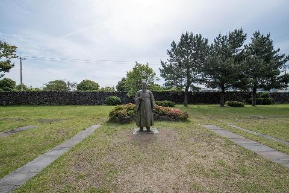
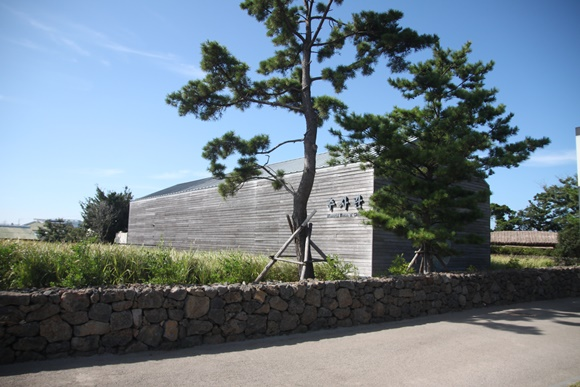

제주추사관
#제주도 #제주추사관 #미술/박물관 #흐림 #겨울
insta
map
매일 09:00 - 18:00 (입장마감 17:30)
월요일 휴무 1월1일,설날 및 추석
064-710-6801
조선후기의 문신이자 서화가였던 추사 김정희가 권력 싸움에서 밀려나 제주도로 유배되면서 머물던 곳입니다.
추사 김정희는 이 곳에 머물면서 국보 제 180호인 완상세한도를 비롯한 많은 서화를 그렸으며, 제주지방 유생들에게 학문과 서예를 가르치는 등 많은 공적을 남겼지요.
이 곳에는 유배 당시 머물던 생가와 편지와 시 등의 작품이 전시되어 있습니다.
추사 김정희는 이 곳에 머물면서 국보 제 180호인 완상세한도를 비롯한 많은 서화를 그렸으며, 제주지방 유생들에게 학문과 서예를 가르치는 등 많은 공적을 남겼지요.
이 곳에는 유배 당시 머물던 생가와 편지와 시 등의 작품이 전시되어 있습니다.
제주특별자치도 서귀포시 대정읍 추사로 44 [지번]제주특별자치도 서귀포시 대정읍 안성리 1661-1